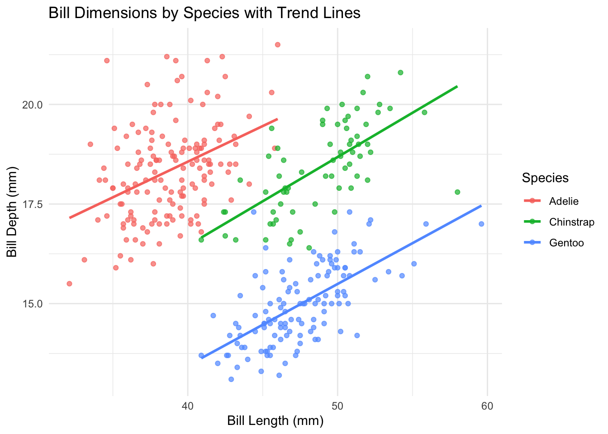

This final, short unit will help prepare us as we launch into course projects. In order to even start these projects, we need some sense of the following:
data import: how to find data, store data, load data into RStudio, and do some preliminary data checks & cleaning
exploratory data analysis (EDA)
23.4 15.2 EDA
23.4.1 What is EDA?!
EDA is a preliminary, exploratory, and iterative analysis of our data relative to our general research questions of interest.
23.4.2 Differece from Before
How is this different than what we’ve been doing? We’ve been focusing on various tools needed for various steps within an EDA. Now we’ll bring them all together in a more cohesive process.
23.4.3 Example
In his book Exploratory Data Analysis with R, Dr. Roger D. Peng included an EDA case study about Changes in Fine Particle Air Pollution in the U.S.. Note that the link to the datasets used by Peng in the chapter is currently broken. Can you figure out the new location?1
23.4.4 EDA Essentials
Start small. We often start with lots of data – some of it useful, some of it not. To start:
Focus on just a small set of variables of interest.
Break down your research question into smaller pieces.
Obtain the most simple numerical & visual summaries that are relevant to your research questions.
Ask questions. We typically start a data analysis with at least some general research questions in mind. In obtaining numerical and graphical summaries that provide insight into these questions, we must ask:
what questions do these summaries answer?
what questions don’t these summaries answer?
what’s surprising or interesting here?
what follow-up questions do these summaries provoke?
Play! Be creative. Don’t lock yourself into a rigid idea of what should happen.
Repeat. Repeat this iterative questioning and analysis process as necessary, letting our reflections on the previous questions inspire our next steps.
23.5 15.3 Sample EDA with the Penguins Dataset
Let’s perform a sample exploratory data analysis using the penguins dataset from the previous classes. This will demonstrate the typical workflow and thought process of EDA.
# Load required packageslibrary(tidyverse)
── Attaching core tidyverse packages ──────────────────────── tidyverse 2.0.0 ──
✔ dplyr 1.1.4 ✔ readr 2.1.5
✔ forcats 1.0.0 ✔ stringr 1.5.1
✔ ggplot2 3.5.2 ✔ tibble 3.2.1
✔ lubridate 1.9.4 ✔ tidyr 1.3.1
✔ purrr 1.0.4
── Conflicts ────────────────────────────────────────── tidyverse_conflicts() ──
✖ dplyr::filter() masks stats::filter()
✖ dplyr::lag() masks stats::lag()
ℹ Use the conflicted package (<http://conflicted.r-lib.org/>) to force all conflicts to become errors
# Load the penguins dataset from a URL (since we can't rely on the palmerpenguins package)penguins <-read_csv("https://raw.githubusercontent.com/allisonhorst/palmerpenguins/master/inst/extdata/penguins.csv")
Rows: 344 Columns: 8
── Column specification ────────────────────────────────────────────────────────
Delimiter: ","
chr (3): species, island, sex
dbl (5): bill_length_mm, bill_depth_mm, flipper_length_mm, body_mass_g, year
ℹ Use `spec()` to retrieve the full column specification for this data.
ℹ Specify the column types or set `show_col_types = FALSE` to quiet this message.
# Take a first look at the datahead(penguins)
# A tibble: 6 × 8
species island bill_length_mm bill_depth_mm flipper_length_mm body_mass_g
<chr> <chr> <dbl> <dbl> <dbl> <dbl>
1 Adelie Torgersen 39.1 18.7 181 3750
2 Adelie Torgersen 39.5 17.4 186 3800
3 Adelie Torgersen 40.3 18 195 3250
4 Adelie Torgersen NA NA NA NA
5 Adelie Torgersen 36.7 19.3 193 3450
6 Adelie Torgersen 39.3 20.6 190 3650
# ℹ 2 more variables: sex <chr>, year <dbl>
23.5.1 Step 1: Understanding the Data Structure
A crucial first step is to understand what we’re working with:
# Check data dimensionsdim(penguins)
[1] 344 8
# Look at data structurestr(penguins)
spc_tbl_ [344 × 8] (S3: spec_tbl_df/tbl_df/tbl/data.frame)
$ species : chr [1:344] "Adelie" "Adelie" "Adelie" "Adelie" ...
$ island : chr [1:344] "Torgersen" "Torgersen" "Torgersen" "Torgersen" ...
$ bill_length_mm : num [1:344] 39.1 39.5 40.3 NA 36.7 39.3 38.9 39.2 34.1 42 ...
$ bill_depth_mm : num [1:344] 18.7 17.4 18 NA 19.3 20.6 17.8 19.6 18.1 20.2 ...
$ flipper_length_mm: num [1:344] 181 186 195 NA 193 190 181 195 193 190 ...
$ body_mass_g : num [1:344] 3750 3800 3250 NA 3450 ...
$ sex : chr [1:344] "male" "female" "female" NA ...
$ year : num [1:344] 2007 2007 2007 2007 2007 ...
- attr(*, "spec")=
.. cols(
.. species = col_character(),
.. island = col_character(),
.. bill_length_mm = col_double(),
.. bill_depth_mm = col_double(),
.. flipper_length_mm = col_double(),
.. body_mass_g = col_double(),
.. sex = col_character(),
.. year = col_double()
.. )
- attr(*, "problems")=<externalptr>
# Summary statisticssummary(penguins)
species island bill_length_mm bill_depth_mm
Length:344 Length:344 Min. :32.10 Min. :13.10
Class :character Class :character 1st Qu.:39.23 1st Qu.:15.60
Mode :character Mode :character Median :44.45 Median :17.30
Mean :43.92 Mean :17.15
3rd Qu.:48.50 3rd Qu.:18.70
Max. :59.60 Max. :21.50
NA's :2 NA's :2
flipper_length_mm body_mass_g sex year
Min. :172.0 Min. :2700 Length:344 Min. :2007
1st Qu.:190.0 1st Qu.:3550 Class :character 1st Qu.:2007
Median :197.0 Median :4050 Mode :character Median :2008
Mean :200.9 Mean :4202 Mean :2008
3rd Qu.:213.0 3rd Qu.:4750 3rd Qu.:2009
Max. :231.0 Max. :6300 Max. :2009
NA's :2 NA's :2
# Check for missing valuescolSums(is.na(penguins))
species island bill_length_mm bill_depth_mm
0 0 2 2
flipper_length_mm body_mass_g sex year
2 2 11 0
23.5.2 Step 2: Formulating Initial Questions
Now that we have a basic understanding of the data, let’s formulate some initial research questions:
How do the body measurements (bill length, bill depth, flipper length, body mass) differ across penguin species?
Is there a relationship between bill dimensions and body mass?
Do these relationships vary by species or sex?
Are there differences in penguin characteristics across the islands?
23.5.3 Step 3: Univariate Exploration
Let’s start by exploring the distribution of individual variables:
# Categorical variablesggplot(penguins, aes(x = species)) +geom_bar(fill ="steelblue") +labs(title ="Count of Penguins by Species",x ="Species",y ="Count")
ggplot(penguins, aes(x = island)) +geom_bar(fill ="steelblue") +labs(title ="Count of Penguins by Island",x ="Island",y ="Count")
# Numerical variablesggplot(penguins, aes(x = bill_length_mm)) +geom_histogram(bins =20, fill ="steelblue", color ="white") +labs(title ="Distribution of Bill Length",x ="Bill Length (mm)",y ="Count")
Warning: Removed 2 rows containing non-finite outside the scale range
(`stat_bin()`).
# Create a function to make multiple histograms more efficientlyplot_histogram <-function(data, var, title) {ggplot(data, aes(x = {{var}})) +geom_histogram(bins =20, fill ="steelblue", color ="white") +labs(title = title,y ="Count") +theme_minimal()}# Plot multiple histograms for numerical variablesplot_histogram(penguins, bill_depth_mm, "Distribution of Bill Depth")
Warning: Removed 2 rows containing non-finite outside the scale range
(`stat_bin()`).
plot_histogram(penguins, flipper_length_mm, "Distribution of Flipper Length")
Warning: Removed 2 rows containing non-finite outside the scale range
(`stat_bin()`).
plot_histogram(penguins, body_mass_g, "Distribution of Body Mass")
Warning: Removed 2 rows containing non-finite outside the scale range
(`stat_bin()`).
23.5.4 Step 4: Bivariate Exploration
Now let’s explore relationships between pairs of variables:
# Relationship between bill length and bill depthggplot(penguins, aes(x = bill_length_mm, y = bill_depth_mm)) +geom_point(alpha =0.7) +labs(title ="Bill Length vs. Bill Depth",x ="Bill Length (mm)",y ="Bill Depth (mm)") +theme_minimal()
Warning: Removed 2 rows containing missing values or values outside the scale range
(`geom_point()`).
# Relationship between flipper length and body massggplot(penguins, aes(x = flipper_length_mm, y = body_mass_g)) +geom_point(alpha =0.7) +labs(title ="Flipper Length vs. Body Mass",x ="Flipper Length (mm)",y ="Body Mass (g)") +theme_minimal()
Warning: Removed 2 rows containing missing values or values outside the scale range
(`geom_point()`).
# Bill characteristics by speciesggplot(penguins, aes(x = species, y = bill_length_mm)) +geom_boxplot(fill ="steelblue", alpha =0.7) +labs(title ="Bill Length by Species",x ="Species",y ="Bill Length (mm)") +theme_minimal()
Warning: Removed 2 rows containing non-finite outside the scale range
(`stat_boxplot()`).
Warning: Removed 2 rows containing non-finite outside the scale range
(`stat_boxplot()`).
23.5.5 Step 5: Multivariate Exploration
Now let’s explore more complex relationships by incorporating a third variable:
# Bill dimensions by speciesggplot(penguins, aes(x = bill_length_mm, y = bill_depth_mm, color = species)) +geom_point(alpha =0.7) +labs(title ="Bill Dimensions by Species",x ="Bill Length (mm)",y ="Bill Depth (mm)",color ="Species") +theme_minimal()
Warning: Removed 2 rows containing missing values or values outside the scale range
(`geom_point()`).
# Add regression lines to see trends by speciesggplot(penguins, aes(x = bill_length_mm, y = bill_depth_mm, color = species)) +geom_point(alpha =0.7) +geom_smooth(method ="lm", se =FALSE) +labs(title ="Bill Dimensions by Species with Trend Lines",x ="Bill Length (mm)",y ="Bill Depth (mm)",color ="Species") +theme_minimal()
`geom_smooth()` using formula = 'y ~ x'
Warning: Removed 2 rows containing non-finite outside the scale range
(`stat_smooth()`).
Warning: Removed 2 rows containing missing values or values outside the scale range
(`geom_point()`).

# Relationship between flipper length and body mass by speciesggplot(penguins, aes(x = flipper_length_mm, y = body_mass_g, color = species)) +geom_point(alpha =0.7) +geom_smooth(method ="lm", se =FALSE) +labs(title ="Body Mass vs. Flipper Length by Species",x ="Flipper Length (mm)",y ="Body Mass (g)",color ="Species") +theme_minimal()
`geom_smooth()` using formula = 'y ~ x'
Warning: Removed 2 rows containing non-finite outside the scale range
(`stat_smooth()`).
Warning: Removed 2 rows containing missing values or values outside the scale range
(`geom_point()`).
# Let's add another dimension - examining by sexggplot(penguins, aes(x = flipper_length_mm, y = body_mass_g, color = species, shape = sex)) +geom_point(alpha =0.7, size =3) +labs(title ="Body Mass vs. Flipper Length by Species and Sex",x ="Flipper Length (mm)",y ="Body Mass (g)",color ="Species",shape ="Sex") +theme_minimal()
Warning: Removed 11 rows containing missing values or values outside the scale range
(`geom_point()`).
23.5.6 Step 6: Data Transformation and Summary Statistics
Let’s calculate some summary statistics to complement our visualizations:
# Summary statistics by species and sexpenguins |>filter(!is.na(sex)) |># Remove NA values for sexgroup_by(species, sex) |>summarize(mean_bill_length =mean(bill_length_mm, na.rm =TRUE),mean_bill_depth =mean(bill_depth_mm, na.rm =TRUE),mean_flipper_length =mean(flipper_length_mm, na.rm =TRUE),mean_body_mass =mean(body_mass_g, na.rm =TRUE),count =n(),.groups ="drop"# Drop grouping after summarization )
# A tibble: 6 × 7
species sex mean_bill_length mean_bill_depth mean_flipper_length
<chr> <chr> <dbl> <dbl> <dbl>
1 Adelie female 37.3 17.6 188.
2 Adelie male 40.4 19.1 192.
3 Chinstrap female 46.6 17.6 192.
4 Chinstrap male 51.1 19.3 200.
5 Gentoo female 45.6 14.2 213.
6 Gentoo male 49.5 15.7 222.
# ℹ 2 more variables: mean_body_mass <dbl>, count <int>
After our exploration, we can identify several insights:
Species Differences: The three penguin species show distinct characteristics:
Adelie penguins have medium bill length but greater bill depth
Chinstrap penguins have longer, narrower bills
Gentoo penguins are larger overall with longer flippers and greater body mass
Morphological Relationships: There’s a strong positive correlation between flipper length and body mass across all species.
Sexual Dimorphism: Males tend to be larger than females within each species.
Island Distribution: Not all species are found on all islands. Biscoe has both Adelie and Gentoo, Dream has Adelie and Chinstrap, and Torgersen has only Adelie.
Based on these findings, further questions might include:
Are the bill morphology differences related to different feeding strategies?
How do environmental factors on different islands affect penguin characteristics?
What is the relationship between body measurements and other factors like age or reproductive success?
23.5.8 Step 8: Refined Analysis
Let’s create a more sophisticated visualization that captures multiple dimensions of our data:
# Create a comprehensive visualizationggplot(penguins, aes(x = bill_length_mm, y = bill_depth_mm, color = species, size = body_mass_g, shape = sex)) +geom_point(alpha =0.7) +facet_wrap(~ island) +labs(title ="Penguin Bill Dimensions by Species, Sex, and Island",subtitle ="Point size represents body mass",x ="Bill Length (mm)",y ="Bill Depth (mm)",color ="Species",size ="Body Mass (g)",shape ="Sex") +theme_minimal() +theme(legend.position ="right")
Warning: Removed 11 rows containing missing values or values outside the scale range
(`geom_point()`).
23.6 15.4 Conclusion
This exploratory data analysis has demonstrated the iterative process of understanding a dataset:
We started by examining the dataset structure and getting familiar with the variables
We formulated some initial questions to guide our exploration
We explored univariate distributions to understand individual variables
We examined bivariate relationships to discover connections between variables
We conducted multivariate analysis to uncover more complex patterns
We calculated summary statistics to quantify the patterns we observed visually
We identified insights and generated further questions for investigation
The key insight from this EDA is that the three penguin species have distinct morphological characteristics, particularly in bill dimensions, which likely relate to their different ecological niches. Sexual dimorphism is evident across all species, with males generally larger than females. The island distribution suggests different habitat preferences or environmental adaptations among the species.
This exploration provides a solid foundation for more sophisticated analyses, such as predictive modeling to classify penguin species based on morphological measurements or investigating the evolutionary and ecological factors driving the observed patterns.
23.7 15.5 Exercises
Work on Homework 7
It might have been moved to https://aqs.epa.gov/aqsweb/airdata/download_files.html↩︎
Source Code
---title: "Exploratory Data Analysis"format: html---## Learning Goals* Understand the first steps that should be taken when you encounter a new data set* Develop comfort in knowing how to explore data to understand it* Develop comfort in formulating research questions## Additional ResourcesFor more information about the topics covered in this chapter, refer to the resources below:* [Exploratory Data Analysis (html)](https://r4ds.had.co.nz/exploratory-data-analysis.html) by Wickham, Çetinkaya-Rundel, & Grolemund* [Exploratory Data Analysis Checklist (html)](https://www.rdocumentation.org/packages/examscan/versions/0.1/topics/EDA-checklist) by Peng* [R Packages to do EDA (html)](https://m-clark.github.io/posts/2018-10-18-exploring-data/) blog post by Michael Clark## 15.1 Review### WHERE ARE WE?!? Starting a data projectThis final, short unit will help prepare us as we launch into course projects. In order to even *start* these projects, we need some sense of the following:1. data import: how to find data, store data, load data into RStudio, and do some preliminary data checks & cleaning2. exploratory data analysis (EDA)## 15.2 EDA### What is EDA?!EDA is a preliminary, exploratory, and iterative analysis of our data relative to our general research questions of interest.### Differece from BeforeHow is this different than what we've been doing? We've been focusing on various tools needed for various steps *within* an EDA. Now we'll bring them all together in a more cohesive *process*.### ExampleIn his book Exploratory Data Analysis with R, Dr. Roger D. Peng included an EDA case study about Changes in Fine Particle Air Pollution in the U.S.. Note that the link to the datasets used by Peng in the chapter is currently broken. Can you figure out the new location?^[It might have been moved to https://aqs.epa.gov/aqsweb/airdata/download_files.html]### EDA Essentials* Start small. We often start with lots of data – some of it useful, some of it not. To start: * Focus on just a small set of variables of interest. * Break down your research question into smaller pieces. * Obtain the most simple numerical & visual summaries that are relevant to your research questions.* Ask questions. We typically start a data analysis with at least some general research questions in mind. In obtaining numerical and graphical summaries that provide insight into these questions, we must ask: * what questions *do* these summaries answer? * what questions *don't* these summaries answer? * what's surprising or interesting here? * what *follow-up* questions do these summaries provoke?* Play! Be creative. Don't lock yourself into a rigid idea of what should happen.* Repeat. Repeat this iterative questioning and analysis process as necessary, letting our reflections on the previous questions inspire our next steps.## 15.3 Sample EDA with the Penguins DatasetLet's perform a sample exploratory data analysis using the penguins dataset from the previous classes. This will demonstrate the typical workflow and thought process of EDA.```{r}# Load required packageslibrary(tidyverse)# Load the penguins dataset from a URL (since we can't rely on the palmerpenguins package)penguins <-read_csv("https://raw.githubusercontent.com/allisonhorst/palmerpenguins/master/inst/extdata/penguins.csv")# Take a first look at the datahead(penguins)```### Step 1: Understanding the Data StructureA crucial first step is to understand what we're working with:```{r}# Check data dimensionsdim(penguins)# Look at data structurestr(penguins)# Summary statisticssummary(penguins)``````{r}# Check for missing valuescolSums(is.na(penguins))```### Step 2: Formulating Initial QuestionsNow that we have a basic understanding of the data, let's formulate some initial research questions:1. How do the body measurements (bill length, bill depth, flipper length, body mass) differ across penguin species?2. Is there a relationship between bill dimensions and body mass?3. Do these relationships vary by species or sex?4. Are there differences in penguin characteristics across the islands?### Step 3: Univariate ExplorationLet's start by exploring the distribution of individual variables:```{r}# Categorical variablesggplot(penguins, aes(x = species)) +geom_bar(fill ="steelblue") +labs(title ="Count of Penguins by Species",x ="Species",y ="Count")``````{r}ggplot(penguins, aes(x = island)) +geom_bar(fill ="steelblue") +labs(title ="Count of Penguins by Island",x ="Island",y ="Count")``````{r}# Numerical variablesggplot(penguins, aes(x = bill_length_mm)) +geom_histogram(bins =20, fill ="steelblue", color ="white") +labs(title ="Distribution of Bill Length",x ="Bill Length (mm)",y ="Count")``````{r}# Create a function to make multiple histograms more efficientlyplot_histogram <-function(data, var, title) {ggplot(data, aes(x = {{var}})) +geom_histogram(bins =20, fill ="steelblue", color ="white") +labs(title = title,y ="Count") +theme_minimal()}# Plot multiple histograms for numerical variablesplot_histogram(penguins, bill_depth_mm, "Distribution of Bill Depth")``````{r}plot_histogram(penguins, flipper_length_mm, "Distribution of Flipper Length")``````{r}plot_histogram(penguins, body_mass_g, "Distribution of Body Mass")```### Step 4: Bivariate ExplorationNow let's explore relationships between pairs of variables:```{r}# Relationship between bill length and bill depthggplot(penguins, aes(x = bill_length_mm, y = bill_depth_mm)) +geom_point(alpha =0.7) +labs(title ="Bill Length vs. Bill Depth",x ="Bill Length (mm)",y ="Bill Depth (mm)") +theme_minimal()``````{r}# Relationship between flipper length and body massggplot(penguins, aes(x = flipper_length_mm, y = body_mass_g)) +geom_point(alpha =0.7) +labs(title ="Flipper Length vs. Body Mass",x ="Flipper Length (mm)",y ="Body Mass (g)") +theme_minimal()``````{r}# Bill characteristics by speciesggplot(penguins, aes(x = species, y = bill_length_mm)) +geom_boxplot(fill ="steelblue", alpha =0.7) +labs(title ="Bill Length by Species",x ="Species",y ="Bill Length (mm)") +theme_minimal()``````{r}ggplot(penguins, aes(x = species, y = bill_depth_mm)) +geom_boxplot(fill ="steelblue", alpha =0.7) +labs(title ="Bill Depth by Species",x ="Species",y ="Bill Depth (mm)") +theme_minimal()```### Step 5: Multivariate ExplorationNow let's explore more complex relationships by incorporating a third variable:```{r}# Bill dimensions by speciesggplot(penguins, aes(x = bill_length_mm, y = bill_depth_mm, color = species)) +geom_point(alpha =0.7) +labs(title ="Bill Dimensions by Species",x ="Bill Length (mm)",y ="Bill Depth (mm)",color ="Species") +theme_minimal()``````{r}# Add regression lines to see trends by speciesggplot(penguins, aes(x = bill_length_mm, y = bill_depth_mm, color = species)) +geom_point(alpha =0.7) +geom_smooth(method ="lm", se =FALSE) +labs(title ="Bill Dimensions by Species with Trend Lines",x ="Bill Length (mm)",y ="Bill Depth (mm)",color ="Species") +theme_minimal()``````{r}# Relationship between flipper length and body mass by speciesggplot(penguins, aes(x = flipper_length_mm, y = body_mass_g, color = species)) +geom_point(alpha =0.7) +geom_smooth(method ="lm", se =FALSE) +labs(title ="Body Mass vs. Flipper Length by Species",x ="Flipper Length (mm)",y ="Body Mass (g)",color ="Species") +theme_minimal()``````{r}# Let's add another dimension - examining by sexggplot(penguins, aes(x = flipper_length_mm, y = body_mass_g, color = species, shape = sex)) +geom_point(alpha =0.7, size =3) +labs(title ="Body Mass vs. Flipper Length by Species and Sex",x ="Flipper Length (mm)",y ="Body Mass (g)",color ="Species",shape ="Sex") +theme_minimal()```### Step 6: Data Transformation and Summary StatisticsLet's calculate some summary statistics to complement our visualizations:```{r}# Summary statistics by speciespenguins |>group_by(species) |>summarize(mean_bill_length =mean(bill_length_mm, na.rm =TRUE),mean_bill_depth =mean(bill_depth_mm, na.rm =TRUE),mean_flipper_length =mean(flipper_length_mm, na.rm =TRUE),mean_body_mass =mean(body_mass_g, na.rm =TRUE),count =n() )``````{r}# Summary statistics by species and sexpenguins |>filter(!is.na(sex)) |># Remove NA values for sexgroup_by(species, sex) |>summarize(mean_bill_length =mean(bill_length_mm, na.rm =TRUE),mean_bill_depth =mean(bill_depth_mm, na.rm =TRUE),mean_flipper_length =mean(flipper_length_mm, na.rm =TRUE),mean_body_mass =mean(body_mass_g, na.rm =TRUE),count =n(),.groups ="drop"# Drop grouping after summarization )``````{r}# Summary statistics by islandpenguins |>group_by(island) |>summarize(count =n(),species_count =n_distinct(species),mean_body_mass =mean(body_mass_g, na.rm =TRUE) )```### Step 7: Insights and Further QuestionsAfter our exploration, we can identify several insights:1. **Species Differences**: The three penguin species show distinct characteristics: - Adelie penguins have medium bill length but greater bill depth - Chinstrap penguins have longer, narrower bills - Gentoo penguins are larger overall with longer flippers and greater body mass2. **Morphological Relationships**: There's a strong positive correlation between flipper length and body mass across all species.3. **Sexual Dimorphism**: Males tend to be larger than females within each species.4. **Island Distribution**: Not all species are found on all islands. Biscoe has both Adelie and Gentoo, Dream has Adelie and Chinstrap, and Torgersen has only Adelie.Based on these findings, further questions might include:1. Are the bill morphology differences related to different feeding strategies?2. How do environmental factors on different islands affect penguin characteristics?3. What is the relationship between body measurements and other factors like age or reproductive success?### Step 8: Refined AnalysisLet's create a more sophisticated visualization that captures multiple dimensions of our data:```{r}# Create a comprehensive visualizationggplot(penguins, aes(x = bill_length_mm, y = bill_depth_mm, color = species, size = body_mass_g, shape = sex)) +geom_point(alpha =0.7) +facet_wrap(~ island) +labs(title ="Penguin Bill Dimensions by Species, Sex, and Island",subtitle ="Point size represents body mass",x ="Bill Length (mm)",y ="Bill Depth (mm)",color ="Species",size ="Body Mass (g)",shape ="Sex") +theme_minimal() +theme(legend.position ="right")```## 15.4 ConclusionThis exploratory data analysis has demonstrated the iterative process of understanding a dataset:1. We started by examining the dataset structure and getting familiar with the variables2. We formulated some initial questions to guide our exploration3. We explored univariate distributions to understand individual variables4. We examined bivariate relationships to discover connections between variables5. We conducted multivariate analysis to uncover more complex patterns6. We calculated summary statistics to quantify the patterns we observed visually7. We identified insights and generated further questions for investigationThe key insight from this EDA is that the three penguin species have distinct morphological characteristics, particularly in bill dimensions, which likely relate to their different ecological niches. Sexual dimorphism is evident across all species, with males generally larger than females. The island distribution suggests different habitat preferences or environmental adaptations among the species.This exploration provides a solid foundation for more sophisticated analyses, such as predictive modeling to classify penguin species based on morphological measurements or investigating the evolutionary and ecological factors driving the observed patterns.## 15.5 ExercisesWork on Homework 7